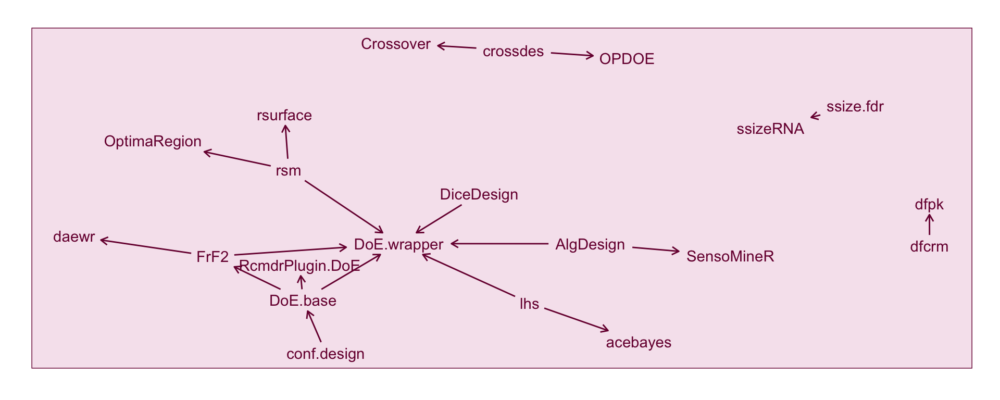

Current state of R packages for the design of experiments
experimental design
R
Your analytical toolkit matters very little if the data are no good. Ideally you want to know to how the data were collected before delving into the analysis of the data; better yet, get involved before the collection of data and design its collection. In this post I explore some of the top downloaded R packages for the design of experiments and analysis of experimental data.
library(tidyverse)── Attaching packages ─────────────────────────────────────── tidyverse 1.3.1 ──✔ ggplot2 3.3.6 ✔ purrr 0.3.4
✔ tibble 3.1.8 ✔ dplyr 1.0.9
✔ tidyr 1.2.0 ✔ stringr 1.4.0
✔ readr 2.1.2 ✔ forcats 0.5.1── Conflicts ────────────────────────────────────────── tidyverse_conflicts() ──
✖ dplyr::filter() masks stats::filter()
✖ dplyr::lag() masks stats::lag()library(rvest)
Attaching package: 'rvest'The following object is masked from 'package:readr':
guess_encodinglibrary(lubridate)
Attaching package: 'lubridate'The following objects are masked from 'package:base':
date, intersect, setdiff, unionlibrary(cranlogs)
library(glue)
library(scales)
Attaching package: 'scales'The following object is masked from 'package:purrr':
discardThe following object is masked from 'package:readr':
col_factorlibrary(colorspace)
library(tidytext)
library(pluralize)
library(kableExtra)
Attaching package: 'kableExtra'The following object is masked from 'package:dplyr':
group_rowslibrary(igraph)
Attaching package: 'igraph'The following objects are masked from 'package:lubridate':
%--%, unionThe following objects are masked from 'package:dplyr':
as_data_frame, groups, unionThe following objects are masked from 'package:purrr':
compose, simplifyThe following object is masked from 'package:tidyr':
crossingThe following object is masked from 'package:tibble':
as_data_frameThe following objects are masked from 'package:stats':
decompose, spectrumThe following object is masked from 'package:base':
unionlibrary(ggraph)
myggtheme <-
theme(panel.background = element_rect(fill = NA),
panel.grid = element_line(color = "#f6e5ee"),
axis.text = element_text(color = "#79003e"),
axis.line = element_line(color = "#79003e", size = 0.7),
axis.ticks.length = unit(1.4, "mm"),
axis.ticks = element_line(color = "#79003e", size = 0.7),
axis.title = element_text(color = "#79003e", face = "bold"),
strip.background = element_rect(color = "#79003e",
fill = "#AD0059"),
strip.text = element_text(color = "white"),
plot.title.position = "plot",
plot.title = element_text(color = "#79003e", face = "bold")) # Thanks to Dirk Eddelbuettel's answer on SO:
# https://stackoverflow.com/questions/11560865/list-and-description-of-all-packages-in-cran-from-within-r
url <- "https://cran.rstudio.com/web/packages/packages.rds"
db <- readRDS(url(url)) %>%
as.data.frame()nanalysis <- db %>%
filter(str_detect(tolower(Title), "analysis")) %>%
nrow()
ndesign <- db %>%
filter(str_detect(tolower(Title), "design")) %>%
nrow()Data collection
As many know, it doesn’t matter how good your analytical tools is if your data are rubbish. This sentiment is often captured in the expression “garbage in, garbage out”. It’s something we all seem to know but there is still a tendency for many of us to place a greater focus on the analysis1. This is perhaps all natural given that a potential for discovery is just so much more exciting than ensuring the quality of the collected data.
So what is considered as good quality data? A lack of error in the data? Data containing enough range of variables and sample size for the downstream analysis? Giving an explicit definition of a good quality data is a fraught exercise, but if you know how the data were collected then you can better perform the initial data analysis (Chatfield 1985) to weed out (or fix) potential poor quality data. This step will likely get more value out of the data than fitting complex models to poor quality data.
Better than knowing how the data were collected, if you can design the collection of data so that it’s optimised for the purpose of the analysis2, then you can potentially get even a better value out of your data. Not all data collection starts with an explicit analytical plan though. Furthermore, you may have very little control of how the data are collected. Often these are observational data or making a secondary use of experimental data. This article will focus on data collection of an experiment where you have some control of the collection process.
Experimental data
All experiments are conducted with some objective in mind. This could be that a scientist may wish to test their hypothesis, a manufacturer wants to know which manufacturing process is better or a researcher wants to understand some cause-and-effect relationships. A characteristic part of an experiment is that the experimenter has control over some explanatory variables. In a comparative experiment, the control is over the allocation of treatments to subjects. Designing an experiment in the statistics discipline usually focus on this allocation, although it’s important to keep in mind that there are other decision factors in an experiment.
Data that are collected from experiments are what we refer to as experimental data. Because it was collected with some objective in mind followed by some data collection plan, experimental data are often thought of to be better quality than observational data. But then again if you can’t quantify the quality of data, you can’t really tell. Certain scientific claims (e.g. causation, better treatment) can only be substantiated by experiments and so experimental data is held to a higher standard in general.
Design and analysis of experiments
dat_DoE <- read_html("https://cran.r-project.org/web/views/ExperimentalDesign.html")
date_download <- Sys.Date()
cran_names <- available.packages(repos = "https://cran.rstudio.com/") %>%
rownames() %>%
unique() # it should be unique
doe_pkgs <- dat_DoE %>%
html_nodes("li") %>%
html_nodes("a") %>%
html_text() %>%
.[. %in% cran_names] %>%
unique()
dat_survey <- read_html("https://cran.r-project.org/web/views/OfficialStatistics.html")
survey_pkgs <- dat_survey %>%
html_nodes("li") %>%
html_nodes("a") %>%
html_text() %>%
.[. %in% cran_names] %>%
unique()There are all together 83 R-packages in the CRAN Task View of Design of Experiments & Analysis of Experimental Data as of 2022-09-18.3 I’m going to refer these packages as DoE packages, although there are some packages in the mix that are more about the analysis of experimental data rather than the design of experiments and there are some packages that are missing in the list (e.g. DeclareDesign). The DoE packages make up about 0.4% of the 18,592 packages available in CRAN.
The DoE packages don’t include survey design. These instead belong to the CRAN Task View of Official Statistics & Survey Methodology which contains 122 packages. While some surveys are part of an experimental study, most often they generate observational data.
Below I have a number of different analysis for these DoE packages. If you push the button on the top right corner of this article, you can toggle the display for the code or alternatively you can have a look at the source Rmd document.
Bigram of DoE package titles and descriptions
stop_words_ext <- c(stop_words$word, "doi")
doe_db <- db %>%
filter(Package %in% doe_pkgs) %>%
mutate(Description = str_replace_all(Description, "\n", " "),
Description = str_squish(Description),
Title = str_replace_all(Title, "\n", " "))
bigram_tab <- function(data, col) {
data %>%
unnest_tokens(word, {{col}}, token = "ngrams", n = 2) %>%
separate(word, c("word1", "word2"), sep = " ") %>%
mutate(word1 = singularize(word1),
word2 = singularize(word2)) %>%
# don't count the same bigram within the same package
distinct(Package, word1, word2) %>%
filter(!word1 %in% stop_words_ext,
!word2 %in% stop_words_ext,
!str_detect(word1, "^[0-9.]+$"),
!str_detect(word2, "^[0-9.]+$")) %>%
count(word1, word2, sort = TRUE)
}bigram_tab(doe_db, Description) %>%
filter(n > 4) %>%
mutate(word = paste(word1, word2)) %>%
select(word, n) %>%
kbl(caption = "The bigram of the R-package _descriptions_ as provided in the DESCRIPTION file in CRAN.",
col.names = c("Bigram", "Count")) %>%
kable_classic(full_width = FALSE)bigram_tab(doe_db, Title) %>%
filter(n > 3) %>%
mutate(word = paste(word1, word2)) %>%
select(word, n) %>%
kbl(caption = "The bigram of the R-package _titles_ as provided in the DESCRIPTION file in CRAN.",
col.names = c("Bigram", "Count")) %>%
kable_classic(full_width = FALSE)Table @ref(tab:bigram-title) shows the most common bigrams in the title of the DoE packages. It’s perhaps not surprising but the words “optimal design” and “experimental design” are the top. It’s also likely that the words “design of experiments” appears often but because this is a bigram (two consecutive words) so it doesn’t appear. You might then wonder if that’s the case words like “design of” or “of experiments” should make an appearance, however “of” is a stop word and these are filtered out otherwise unwanted bigrams come up on the top.
There are couple of words like “clinical trial” and “dose finding” that suggests applications in medical experiments, as well as “microarray experiment” that suggests application in bioinformatics.
| Bigram | Count |
|---|---|
| experimental design | 6 |
| optimal design | 6 |
| clinical trial | 5 |
| dose finding | 5 |
| sequential design | 5 |
| block design | 4 |
| microarray experiment | 4 |
The title alone might be too succinct for text analysis so I also had a look at the most common bigrams in the description of the DoE packages as shown in Table @ref(tab:bigram-desc). The counts in Table @ref(tab:bigram-desc) (and also Table @ref(tab:bigram-title)) is across the DoE packages. To be more clear, even if the bigram is mentioned multiple times within the description, it’s only counted once per package. This removes the inflation of the counts due to one package mentioning the same bigram over and over again.
Again not surprisingly “experimental design” and “optimal design” comes on top in the DoE package descriptions. The words “graphical user” and “user interface” implies that the trigram “graphical user interface” was probably common.
| Bigram | Count |
|---|---|
| experimental design | 7 |
| optimal design | 7 |
| block design | 5 |
| clinical trial | 5 |
| factorial design | 5 |
| graphical user | 5 |
| microarray experiment | 5 |
| user interface | 5 |
Network of DoE package imports and dependencies
doe_imports <- doe_db %>%
mutate(Depends = str_replace_all(Depends, "\n", " "),
Depends = str_replace_all(Depends, fixed("("), " ("),
Imports = str_replace_all(Imports, "\n", " "),
Imports = str_replace_all(Imports, fixed("("), " ("),
imports = str_c(Depends, Imports, sep = ","),
imports = str_split(imports, ","),
imports = map(imports, ~{
str_squish(.x) %>%
word() %>%
.[.!=""]}
),
imports_doe = map(imports, ~.x[.x %in% doe_pkgs])) %>%
select(Package, imports_doe) %>%
unnest_longer(imports_doe) %>%
filter(!is.na(imports_doe)) %>%
rename(from = imports_doe, to = Package) %>%
select(from, to)Figure @ref(fig:doe-network) shows the imports and dependency between the DoE packages. We can see here that DoE.wrapper imports a fair number of DoE packages that results in the major network cluster see in Figure @ref(fig:doe-network). AlgDesign and DoE.base are imported into four other DoE packages so form an important base in the DoE world.
graph_from_data_frame(doe_imports) %>%
ggraph(layout = 'fr') +
geom_edge_link(aes(start_cap = label_rect(node1.name),
end_cap = label_rect(node2.name)),
arrow = arrow(length = unit(2, 'mm')),
color = "#79003e") +
geom_node_text(aes(label = name),
color = "#79003e") +
theme(panel.background = element_rect(fill = "#f6e5ee",
color = "#79003e"),
plot.margin = margin(20, 20, 20, 20))(ref:network) The network of imports and dependency among DoE packages alone. Each node represents a DoE package. DoE packages with no imports or dependency on other DoE packages are excluded. Each arrow represents the relationship between the packages such that the package on the tail is used by package on the head of the arrow.

CRAN download logs
end <- Sys.Date() - 2 # usually 1-2 days are not available yet
start <- end - years(5) + days(2)
dldat <- cran_downloads(doe_pkgs, from = start, to = end)dldat %>%
group_by(package) %>%
summarise(total = sum(count)) %>%
ggplot(aes(total)) +
geom_histogram(color = "white", fill = "#AD0059") +
scale_x_log10(label = comma) +
myggtheme +
labs(x = glue("Total download counts from {start} to {end}"),
y = "Number of packages") +
scale_y_continuous(expand = c(0, 0))Figure @ref(fig:download-hist) shows the distribution of the total download counts over the last 5 years4 of the DoE packages. This graph doesn’t take into account that some DoE packages may only have been on CRAN in the last 5 years so the counts are in favour of DoE packages that’s been on CRAN longer.
(ref:hist) Histogram of the total download count over last 5 years of the DoE packages.
`stat_bin()` using `bins = 30`. Pick better value with `binwidth`.Top 5 DoE packages
ntop <- 5
top5sum_df <- dldat %>%
group_by(package) %>%
summarise(total = sum(count)) %>%
ungroup() %>%
slice_max(order_by = total, n = ntop)
top5 <- top5sum_df %>%
pull(package)
top5_df <- dldat %>%
filter(package %in% top5) %>%
mutate(package = fct_reorder(package, count, function(x) -sum(x))) The top 5 downloaded DoE packages at the time of this writing are AlgDesign, lhs, DiceDesign, DoE.base, and FrF2. You can see the download counts in Figure @ref(fig:download-barplot).
top5sum_df %>%
mutate(package = fct_reorder(package, total)) %>%
ggplot(aes(total, package)) +
geom_col(aes(fill = package)) +
labs(x = glue("Total downloads from {start} to {end}"),
y = "Package") +
scale_x_continuous(labels = comma, expand = c(0, 0)) +
myggtheme +
scale_fill_discrete_qualitative(rev = TRUE) +
guides(fill = FALSE)(ref:barplot) The above barplot shows the total downloads of the top 5 downloaded DoE packages from the period 2017-09-18 to 2022-09-16.
Warning: `guides(<scale> = FALSE)` is deprecated. Please use `guides(<scale> =
"none")` instead.We can have a look at further examination of the top 5 DoE packages by looking at the daily download counts as shown in Figure @ref(fig:download-barplot). The download counts are the raw values and these include downloads by CRAN mirror and bots. There is a noticeable spike when there is an update to the CRAN package. This is partly because when there is a new version of the package, when you install other packages that depend or import it then R will prompt you to install the new version. This means that the download counts are inflated and to some extent you can artificially boost them by making regular CRAN updates. The adjustedcranlogs (Morgan-Wall 2017) makes a nice attempt to adjust the raw counts based on a certain heuristic. I didn’t use it since the adjustment is stochastic and I appear to have hit a bug.
pkg_url <- "https://cran.r-project.org/web/packages/{pkg}/index.html"
pkg_archive <- "https://cran.r-project.org/src/contrib/Archive/{pkg}/"
pkg_updates <- map(top5, function(pkg) {
last_update <- read_html(glue(pkg_url)) %>%
html_table() %>%
.[[1]] %>%
filter(X1=="Published:") %>%
pull(X2) %>%
ymd()
archive_dates <- tryCatch({
read_html(glue(pkg_archive)) %>%
html_table() %>%
.[[1]] %>%
pull(`Last modified`) %>%
ymd_hm() %>%
na.omit() %>%
as.Date()
}, error = function(e) {
NULL
})
c(archive_dates, last_update)
})
names(pkg_updates) <- top5
updates <- unlist(pkg_updates) %>%
enframe("package", "update") %>%
# unlist converts date to integers
mutate(update = as.Date(update, origin = "1970-01-01"),
# need to get rid of the numbers appended to pkg names
package = str_extract(package, paste0(top5, collapse="|")),
package = factor(package, levels = top5)) %>%
filter(between(update, start, end))ggplot(top5_df, aes(date, count, color = package)) +
# add shadow lines
geom_line(data = rename(top5_df, package2 = package),
color = "gray", aes(group = package2)) +
# add date when package was updated
geom_vline(data = updates, aes(xintercept = update),
linetype = "dashed", color = "#79003e") +
# the trend line
geom_line() +
scale_y_log10() +
facet_grid(package ~ .) +
labs(title = glue("Top 5 downloaded DoE packages from {start} to {end}")) +
scale_color_discrete_qualitative() +
guides(color = FALSE) +
myggtheme(ref:timeplot) The above plot shows the daily downloads of the top 5 downloaded DoE packages from the period 2017-09-18 to 2022-09-16. The vertical dotted bar corresponds to the date that a new version of the corresponding package was released on CRAN.
Warning: `guides(<scale> = FALSE)` is deprecated. Please use `guides(<scale> =
"none")` instead.R-packages
Here we have a closer look at the functions of the top 5 downloaded DoE packages below ordered by their download counts.
AlgDesignCRAN GitHub Wheeler (2019)
Algorithmic Experimental Design
Originally written by Bob Wheeler but Jerome Braun have taken over maintenance of the package.agricolaeCRAN de Mendiburu (2020)
Statistical Procedures for Agricultural Research
Written and maintained by Felipe de MendiburulhsCRAN GitHub Carnell (2020)
Latin Hypercube Samples
Written and maintained by Rob CarnellezCRAN GitHub Lawrence (2016)
Easy Analysis and Visualization of Factorial Experiments
Written and maintained by Michael A. LawrenceDoE.baseCRAN Grömping (2018)
Full Factorials, Orthogonal Arrays and Base Utilities for DoE Packages
Written and maintained by Ulrike Groemping.
Before we look at the packages, let’s set a seed so we can reproduce the results.
set.seed(2021)AlgDesign
To start off, we begin with the most downloaded DoE package, AlgDesign. The examples below are taken directly from the vignette of the AlgDesign package.
library(AlgDesign)You can create a balanced incomplete block design using the optBlock function. It’s using an optimal design framework where the default criterion is D criterion and the implied model is given in the first argument.
BIB <- optBlock(~ .,
withinData = factor(1:7),
blocksize = rep(3, 7))
BIB$D
[1] 0.08033556
$diagonality
[1] 0.692
$Blocks
$Blocks$B1
X1
1 1
3 3
4 4
$Blocks$B2
X1
2 2
4 4
5 5
$Blocks$B3
X1
4 4
6 6
7 7
$Blocks$B4
X1
3 3
5 5
6 6
$Blocks$B5
X1
2 2
3 3
7 7
$Blocks$B6
X1
1 1
2 2
6 6
$Blocks$B7
X1
1 1
5 5
7 7
$design
X1
1 1
3 3
4 4
2 2
41 4
5 5
42 4
6 6
7 7
31 3
51 5
61 6
21 2
32 3
71 7
11 1
22 2
62 6
12 1
52 5
72 7
$rows
[1] 1 3 4 2 4 5 4 6 7 3 5 6 2 3 7 1 2 6 1 5 7AlgDesign also includes helper functions to generate a factorial structure.
dat <- gen.factorial(2, 7)
dat X1 X2 X3 X4 X5 X6 X7
1 -1 -1 -1 -1 -1 -1 -1
2 1 -1 -1 -1 -1 -1 -1
3 -1 1 -1 -1 -1 -1 -1
4 1 1 -1 -1 -1 -1 -1
5 -1 -1 1 -1 -1 -1 -1
6 1 -1 1 -1 -1 -1 -1
7 -1 1 1 -1 -1 -1 -1
8 1 1 1 -1 -1 -1 -1
9 -1 -1 -1 1 -1 -1 -1
10 1 -1 -1 1 -1 -1 -1
11 -1 1 -1 1 -1 -1 -1
12 1 1 -1 1 -1 -1 -1
13 -1 -1 1 1 -1 -1 -1
14 1 -1 1 1 -1 -1 -1
15 -1 1 1 1 -1 -1 -1
16 1 1 1 1 -1 -1 -1
17 -1 -1 -1 -1 1 -1 -1
18 1 -1 -1 -1 1 -1 -1
19 -1 1 -1 -1 1 -1 -1
20 1 1 -1 -1 1 -1 -1
21 -1 -1 1 -1 1 -1 -1
22 1 -1 1 -1 1 -1 -1
23 -1 1 1 -1 1 -1 -1
24 1 1 1 -1 1 -1 -1
25 -1 -1 -1 1 1 -1 -1
26 1 -1 -1 1 1 -1 -1
27 -1 1 -1 1 1 -1 -1
28 1 1 -1 1 1 -1 -1
29 -1 -1 1 1 1 -1 -1
30 1 -1 1 1 1 -1 -1
31 -1 1 1 1 1 -1 -1
32 1 1 1 1 1 -1 -1
33 -1 -1 -1 -1 -1 1 -1
34 1 -1 -1 -1 -1 1 -1
35 -1 1 -1 -1 -1 1 -1
36 1 1 -1 -1 -1 1 -1
37 -1 -1 1 -1 -1 1 -1
38 1 -1 1 -1 -1 1 -1
39 -1 1 1 -1 -1 1 -1
40 1 1 1 -1 -1 1 -1
41 -1 -1 -1 1 -1 1 -1
42 1 -1 -1 1 -1 1 -1
43 -1 1 -1 1 -1 1 -1
44 1 1 -1 1 -1 1 -1
45 -1 -1 1 1 -1 1 -1
46 1 -1 1 1 -1 1 -1
47 -1 1 1 1 -1 1 -1
48 1 1 1 1 -1 1 -1
49 -1 -1 -1 -1 1 1 -1
50 1 -1 -1 -1 1 1 -1
51 -1 1 -1 -1 1 1 -1
52 1 1 -1 -1 1 1 -1
53 -1 -1 1 -1 1 1 -1
54 1 -1 1 -1 1 1 -1
55 -1 1 1 -1 1 1 -1
56 1 1 1 -1 1 1 -1
57 -1 -1 -1 1 1 1 -1
58 1 -1 -1 1 1 1 -1
59 -1 1 -1 1 1 1 -1
60 1 1 -1 1 1 1 -1
61 -1 -1 1 1 1 1 -1
62 1 -1 1 1 1 1 -1
63 -1 1 1 1 1 1 -1
64 1 1 1 1 1 1 -1
65 -1 -1 -1 -1 -1 -1 1
66 1 -1 -1 -1 -1 -1 1
67 -1 1 -1 -1 -1 -1 1
68 1 1 -1 -1 -1 -1 1
69 -1 -1 1 -1 -1 -1 1
70 1 -1 1 -1 -1 -1 1
71 -1 1 1 -1 -1 -1 1
72 1 1 1 -1 -1 -1 1
73 -1 -1 -1 1 -1 -1 1
74 1 -1 -1 1 -1 -1 1
75 -1 1 -1 1 -1 -1 1
76 1 1 -1 1 -1 -1 1
77 -1 -1 1 1 -1 -1 1
78 1 -1 1 1 -1 -1 1
79 -1 1 1 1 -1 -1 1
80 1 1 1 1 -1 -1 1
81 -1 -1 -1 -1 1 -1 1
82 1 -1 -1 -1 1 -1 1
83 -1 1 -1 -1 1 -1 1
84 1 1 -1 -1 1 -1 1
85 -1 -1 1 -1 1 -1 1
86 1 -1 1 -1 1 -1 1
87 -1 1 1 -1 1 -1 1
88 1 1 1 -1 1 -1 1
89 -1 -1 -1 1 1 -1 1
90 1 -1 -1 1 1 -1 1
91 -1 1 -1 1 1 -1 1
92 1 1 -1 1 1 -1 1
93 -1 -1 1 1 1 -1 1
94 1 -1 1 1 1 -1 1
95 -1 1 1 1 1 -1 1
96 1 1 1 1 1 -1 1
97 -1 -1 -1 -1 -1 1 1
98 1 -1 -1 -1 -1 1 1
99 -1 1 -1 -1 -1 1 1
100 1 1 -1 -1 -1 1 1
101 -1 -1 1 -1 -1 1 1
102 1 -1 1 -1 -1 1 1
103 -1 1 1 -1 -1 1 1
104 1 1 1 -1 -1 1 1
105 -1 -1 -1 1 -1 1 1
106 1 -1 -1 1 -1 1 1
107 -1 1 -1 1 -1 1 1
108 1 1 -1 1 -1 1 1
109 -1 -1 1 1 -1 1 1
110 1 -1 1 1 -1 1 1
111 -1 1 1 1 -1 1 1
112 1 1 1 1 -1 1 1
113 -1 -1 -1 -1 1 1 1
114 1 -1 -1 -1 1 1 1
115 -1 1 -1 -1 1 1 1
116 1 1 -1 -1 1 1 1
117 -1 -1 1 -1 1 1 1
118 1 -1 1 -1 1 1 1
119 -1 1 1 -1 1 1 1
120 1 1 1 -1 1 1 1
121 -1 -1 -1 1 1 1 1
122 1 -1 -1 1 1 1 1
123 -1 1 -1 1 1 1 1
124 1 1 -1 1 1 1 1
125 -1 -1 1 1 1 1 1
126 1 -1 1 1 1 1 1
127 -1 1 1 1 1 1 1
128 1 1 1 1 1 1 1This can be an input to specify the design using another function, say with optFederov which uses Federov’s exchange algorithm to generate the design.
desF <- optFederov(~ .^2,
data = dat,
nTrials = 32,
nRepeats = 100)
desF$D
[1] 0.8867999
$A
[1] 1.296784
$Ge
[1] 0.412
$Dea
[1] 0.241
$design
X1 X2 X3 X4 X5 X6 X7
4 1 1 -1 -1 -1 -1 -1
5 -1 -1 1 -1 -1 -1 -1
10 1 -1 -1 1 -1 -1 -1
11 -1 1 -1 1 -1 -1 -1
16 1 1 1 1 -1 -1 -1
17 -1 -1 -1 -1 1 -1 -1
23 -1 1 1 -1 1 -1 -1
28 1 1 -1 1 1 -1 -1
30 1 -1 1 1 1 -1 -1
33 -1 -1 -1 -1 -1 1 -1
38 1 -1 1 -1 -1 1 -1
44 1 1 -1 1 -1 1 -1
50 1 -1 -1 -1 1 1 -1
51 -1 1 -1 -1 1 1 -1
56 1 1 1 -1 1 1 -1
61 -1 -1 1 1 1 1 -1
66 1 -1 -1 -1 -1 -1 1
67 -1 1 -1 -1 -1 -1 1
72 1 1 1 -1 -1 -1 1
76 1 1 -1 1 -1 -1 1
77 -1 -1 1 1 -1 -1 1
84 1 1 -1 -1 1 -1 1
86 1 -1 1 -1 1 -1 1
90 1 -1 -1 1 1 -1 1
95 -1 1 1 1 1 -1 1
100 1 1 -1 -1 -1 1 1
105 -1 -1 -1 1 -1 1 1
110 1 -1 1 1 -1 1 1
111 -1 1 1 1 -1 1 1
117 -1 -1 1 -1 1 1 1
123 -1 1 -1 1 1 1 1
128 1 1 1 1 1 1 1
$rows
[1] 4 5 10 11 16 17 23 28 30 33 38 44 50 51 56 61 66 67 72
[20] 76 77 84 86 90 95 100 105 110 111 117 123 128If you want to further randomise within blocks, you can pass the above result to optBlock.
desFBlk <- optBlock(~ .^2,
withinData = desF$design,
blocksizes = rep(8, 4),
nRepeats = 20)
desFBlk$D
[1] 0.8049815
$diagonality
[1] 0.836
$Blocks
$Blocks$B1
X1 X2 X3 X4 X5 X6 X7
4 1 1 -1 -1 -1 -1 -1
17 -1 -1 -1 -1 1 -1 -1
23 -1 1 1 -1 1 -1 -1
33 -1 -1 -1 -1 -1 1 -1
77 -1 -1 1 1 -1 -1 1
84 1 1 -1 -1 1 -1 1
90 1 -1 -1 1 1 -1 1
123 -1 1 -1 1 1 1 1
$Blocks$B2
X1 X2 X3 X4 X5 X6 X7
10 1 -1 -1 1 -1 -1 -1
16 1 1 1 1 -1 -1 -1
28 1 1 -1 1 1 -1 -1
50 1 -1 -1 -1 1 1 -1
61 -1 -1 1 1 1 1 -1
67 -1 1 -1 -1 -1 -1 1
86 1 -1 1 -1 1 -1 1
100 1 1 -1 -1 -1 1 1
$Blocks$B3
X1 X2 X3 X4 X5 X6 X7
5 -1 -1 1 -1 -1 -1 -1
11 -1 1 -1 1 -1 -1 -1
30 1 -1 1 1 1 -1 -1
44 1 1 -1 1 -1 1 -1
56 1 1 1 -1 1 1 -1
66 1 -1 -1 -1 -1 -1 1
95 -1 1 1 1 1 -1 1
110 1 -1 1 1 -1 1 1
$Blocks$B4
X1 X2 X3 X4 X5 X6 X7
38 1 -1 1 -1 -1 1 -1
51 -1 1 -1 -1 1 1 -1
72 1 1 1 -1 -1 -1 1
76 1 1 -1 1 -1 -1 1
105 -1 -1 -1 1 -1 1 1
111 -1 1 1 1 -1 1 1
117 -1 -1 1 -1 1 1 1
128 1 1 1 1 1 1 1
$design
X1 X2 X3 X4 X5 X6 X7
4 1 1 -1 -1 -1 -1 -1
17 -1 -1 -1 -1 1 -1 -1
23 -1 1 1 -1 1 -1 -1
33 -1 -1 -1 -1 -1 1 -1
77 -1 -1 1 1 -1 -1 1
84 1 1 -1 -1 1 -1 1
90 1 -1 -1 1 1 -1 1
123 -1 1 -1 1 1 1 1
10 1 -1 -1 1 -1 -1 -1
16 1 1 1 1 -1 -1 -1
28 1 1 -1 1 1 -1 -1
50 1 -1 -1 -1 1 1 -1
61 -1 -1 1 1 1 1 -1
67 -1 1 -1 -1 -1 -1 1
86 1 -1 1 -1 1 -1 1
100 1 1 -1 -1 -1 1 1
5 -1 -1 1 -1 -1 -1 -1
11 -1 1 -1 1 -1 -1 -1
30 1 -1 1 1 1 -1 -1
44 1 1 -1 1 -1 1 -1
56 1 1 1 -1 1 1 -1
66 1 -1 -1 -1 -1 -1 1
95 -1 1 1 1 1 -1 1
110 1 -1 1 1 -1 1 1
38 1 -1 1 -1 -1 1 -1
51 -1 1 -1 -1 1 1 -1
72 1 1 1 -1 -1 -1 1
76 1 1 -1 1 -1 -1 1
105 -1 -1 -1 1 -1 1 1
111 -1 1 1 1 -1 1 1
117 -1 -1 1 -1 1 1 1
128 1 1 1 1 1 1 1
$rows
[1] 4 17 23 33 77 84 90 123 10 16 28 50 61 67 86 100 5 11 30
[20] 44 56 66 95 110 38 51 72 76 105 111 117 128agricolae
agricolae is motivated by agricultural applications although the designs are applicable across a variety of fields.
library(agricolae)
Attaching package: 'agricolae'The following object is masked from 'package:igraph':
similarityThe functions to create the design all begin with the word “design.” and the names of the functions are remnant of the name of the experimental design. E.g. design.rcbd generates a Randomised Complete Block Design and design.split generates a Split Plot Design.
ls("package:agricolae") %>%
str_subset("^design.") [1] "design.ab" "design.alpha" "design.bib" "design.crd"
[5] "design.cyclic" "design.dau" "design.graeco" "design.lattice"
[9] "design.lsd" "design.mat" "design.rcbd" "design.split"
[13] "design.strip" "design.youden" Rather than going through each of the functions, I’ll just show one. The command below generates a balanced incomplete block design with 7 treatments of block size 3. This the same design structure as the first example for AlgDesign. What do you think of the input and output?
trt <- LETTERS[1:7]
design.bib(trt = trt, k = 3)
Parameters BIB
==============
Lambda : 1
treatmeans : 7
Block size : 3
Blocks : 7
Replication: 3
Efficiency factor 0.7777778
<<< Book >>>$parameters
$parameters$design
[1] "bib"
$parameters$trt
[1] "A" "B" "C" "D" "E" "F" "G"
$parameters$k
[1] 3
$parameters$serie
[1] 2
$parameters$seed
[1] 1804898417
$parameters$kinds
[1] "Super-Duper"
$statistics
lambda treatmeans blockSize blocks r Efficiency
values 1 7 3 7 3 0.7777778
$sketch
[,1] [,2] [,3]
[1,] "C" "B" "D"
[2,] "A" "E" "B"
[3,] "F" "B" "G"
[4,] "G" "C" "E"
[5,] "G" "A" "D"
[6,] "A" "F" "C"
[7,] "F" "E" "D"
$book
plots block trt
1 101 1 C
2 102 1 B
3 103 1 D
4 201 2 A
5 202 2 E
6 203 2 B
7 301 3 F
8 302 3 B
9 303 3 G
10 401 4 G
11 402 4 C
12 403 4 E
13 501 5 G
14 502 5 A
15 503 5 D
16 601 6 A
17 602 6 F
18 603 6 C
19 701 7 F
20 702 7 E
21 703 7 DMore examples are given in the agricolae tutorial.
lhs
The lhs package is completely different to the previous two packages. It implements methods for creating and augmenting Latin Hypercube Samples and Orthogonal Array Latin Hypercube Samples. The treatment variables here are the parameters and are continuous. In the example below, there are 10 parameters were 30 samples will be drawn from.
library(lhs)
# a design with 30 samples from 10 parameters
A <- randomLHS(30, 10)
A [,1] [,2] [,3] [,4] [,5] [,6]
[1,] 0.85115160 0.80153721 0.26562089 0.24240381 0.386617133 0.57523291
[2,] 0.03162770 0.11851068 0.20750833 0.22137816 0.737580563 0.37572590
[3,] 0.94326309 0.99286802 0.55167951 0.04431126 0.073908842 0.33729208
[4,] 0.15341898 0.23664814 0.45088836 0.02736497 0.276594703 0.77521524
[5,] 0.53987796 0.69129259 0.61068716 0.68112190 0.840092421 0.18545904
[6,] 0.34338962 0.91067411 0.50772141 0.46340514 0.543650700 0.04848456
[7,] 0.87984431 0.18530938 0.28391957 0.80767211 0.636091307 0.40499358
[8,] 0.74093451 0.94142899 0.47633881 0.93482745 0.101815507 0.83195048
[9,] 0.22679294 0.05950478 0.70384589 0.84840308 0.046119869 0.20549016
[10,] 0.59543890 0.14230001 0.91973016 0.38743743 0.008173053 0.11180544
[11,] 0.71222052 0.84574251 0.05719443 0.33460392 0.414795358 0.71230339
[12,] 0.31313954 0.55023270 0.67189798 0.98743475 0.480147544 0.14900939
[13,] 0.06589897 0.02727366 0.94372045 0.11200430 0.776188787 0.31845634
[14,] 0.67856942 0.64694630 0.11695731 0.57667893 0.576669680 0.68236586
[15,] 0.60779222 0.47346774 0.57803451 0.77359785 0.686925390 0.46043188
[16,] 0.77869112 0.45967726 0.97082607 0.72001527 0.158727598 0.52748006
[17,] 0.47753672 0.33965295 0.34264293 0.88078583 0.932636317 0.08469157
[18,] 0.24829930 0.28054142 0.82863690 0.48987801 0.831406425 0.28007202
[19,] 0.63438918 0.62665931 0.19339855 0.63126047 0.222550404 0.84219677
[20,] 0.42615936 0.78697269 0.31122846 0.54731724 0.618925200 0.98370876
[21,] 0.98558294 0.31283813 0.79937608 0.09708168 0.974254219 0.48614679
[22,] 0.82272308 0.72620385 0.63409490 0.51439160 0.888309555 0.94892286
[23,] 0.28216288 0.40678670 0.00747647 0.15786391 0.462001814 0.89070787
[24,] 0.44293885 0.88759165 0.87593133 0.17614748 0.301809115 0.03273681
[25,] 0.91903885 0.58769320 0.85344414 0.73340894 0.261399107 0.65831637
[26,] 0.39749211 0.21531852 0.40155710 0.40795272 0.175926862 0.54073941
[27,] 0.53326444 0.09494134 0.36906730 0.28462433 0.521423827 0.62613184
[28,] 0.12780125 0.76041647 0.14450865 0.32753635 0.958334555 0.25256769
[29,] 0.19956924 0.39260007 0.76646006 0.65147638 0.353769748 0.90342254
[30,] 0.09115621 0.53145384 0.09544316 0.91317843 0.722981039 0.74109078
[,7] [,8] [,9] [,10]
[1,] 0.64829514 0.30957145 0.56063376 0.58060694
[2,] 0.09386871 0.09460784 0.62699580 0.07496677
[3,] 0.14971910 0.02306924 0.12609065 0.18310414
[4,] 0.27273750 0.43275425 0.84548534 0.13991032
[5,] 0.57024842 0.83876578 0.94430739 0.55675175
[6,] 0.68468958 0.93462688 0.69388363 0.77296080
[7,] 0.22736413 0.49914901 0.63951785 0.29475412
[8,] 0.86262149 0.90864828 0.71549074 0.95154810
[9,] 0.82450164 0.34137614 0.35590469 0.33383492
[10,] 0.99755568 0.77506400 0.90850387 0.04070513
[11,] 0.51386141 0.51188486 0.74575618 0.47042600
[12,] 0.62716610 0.60853776 0.19349115 0.85808318
[13,] 0.36810057 0.68906398 0.48416759 0.10075997
[14,] 0.46367072 0.53735362 0.97946521 0.53084746
[15,] 0.79151449 0.39841726 0.16295411 0.32738380
[16,] 0.73055037 0.10636268 0.45184454 0.60852297
[17,] 0.11492100 0.64512714 0.26197028 0.87144705
[18,] 0.90350371 0.27696270 0.41905694 0.25261507
[19,] 0.41560144 0.73423244 0.01653787 0.01640204
[20,] 0.54984313 0.26617569 0.32944947 0.20285318
[21,] 0.73515250 0.59964083 0.87721937 0.82147435
[22,] 0.89461948 0.05944528 0.27581653 0.97355201
[23,] 0.95209334 0.17557806 0.57880924 0.65490041
[24,] 0.35714952 0.82135876 0.80705301 0.91792197
[25,] 0.31657015 0.44139011 0.39117389 0.72964052
[26,] 0.03568867 0.88231315 0.53096409 0.45227701
[27,] 0.18195056 0.23326926 0.79716759 0.42737304
[28,] 0.48629095 0.72335715 0.07429013 0.67936824
[29,] 0.03184096 0.15672156 0.06023826 0.73960757
[30,] 0.23509647 0.98392432 0.20423196 0.38968498lhs provides a number of methods to find the optimal design each with their own criteria.
A1 <- optimumLHS(30, 10, maxSweeps = 4, eps = 0.01)
A2 <- maximinLHS(30, 10, dup = 5)
A3 <- improvedLHS(30, 10, dup = 5)
A4 <- geneticLHS(30, 10, pop = 1000, gen = 8, pMut = 0.1, criterium = "S")
A5 <- geneticLHS(30, 10, pop = 1000, gen = 8, pMut = 0.1, criterium = "Maximin")ez
This is mainly focussed on the analysis of experimental data but some functions such as ezDesign is useful for viewing the experimental structure.
library(ez)
data(ANT2)
ezPrecis(ANT2)Data frame dimensions: 5760 rows, 10 columns type missing values min max
subnum numeric 0 20 1 20
group factor 0 2 Control Treatment
block numeric 0 6 1 6
trial factor 0 48 1 48
cue factor 0 4 None Spatial
flank factor 0 3 Neutral Incongruent
location factor 0 2 down up
direction factor 0 2 left right
rt numeric 144 5617 179.5972 657.6986
error numeric 144 3 0 1ezDesign(data = ANT2,
x = trial,
y = subnum,
row = block,
col = group)DoE.base
DoE.base provides utility functions for the special class design and as seen in Figure @ref(fig:doe-network), DoE.base is used by four other DoE packages that is maintained also by Prof. Dr. Ulrike Grömping.
DoE.base contains functions to generate factorial designs easily.
library(DoE.base)Loading required package: gridLoading required package: conf.designRegistered S3 method overwritten by 'DoE.base':
method from
factorize.factor conf.design
Attaching package: 'DoE.base'The following objects are masked from 'package:stats':
aov, lmThe following object is masked from 'package:graphics':
plot.designThe following object is masked from 'package:base':
lengthsfac.design(nlevels = c(2, 2, 3, 3, 6),
blocks = 6)creating full factorial with 216 runs ... run.no run.no.std.rp Blocks A B C D E
1 1 29.1.5 1 1 1 2 3 1
2 2 89.1.15 1 1 1 2 2 3
3 3 180.1.30 1 2 2 3 3 5
4 4 4.1.2 1 2 2 1 1 1
5 5 84.1.14 1 2 2 3 1 3
6 6 160.1.28 1 2 2 1 2 5
7 7 118.1.19 1 2 1 3 1 4
8 8 186.1.31 1 2 1 2 1 6
9 9 97.1.17 1 1 1 1 3 3
10 10 92.1.16 1 2 2 2 2 3
11 11 214.1.35 1 2 1 3 3 6
12 12 194.1.33 1 2 1 1 2 6
13 13 39.1.8 1 1 2 1 1 2
14 14 1.1.1 1 1 1 1 1 1
15 15 119.1.20 1 1 2 3 1 4
16 16 127.1.22 1 1 2 2 2 4
17 17 134.1.23 1 2 1 1 3 4
18 18 58.1.9 1 2 1 3 2 2
19 19 135.1.24 1 1 2 1 3 4
20 20 149.1.25 1 1 1 2 1 5
21 21 59.1.10 1 1 2 3 2 2
22 22 38.1.7 1 2 1 1 1 2
23 23 67.1.12 1 1 2 2 3 2
24 24 195.1.34 1 1 2 1 2 6
25 25 32.1.6 1 2 2 2 3 1
26 26 66.1.11 1 2 1 2 3 2
27 27 152.1.26 1 2 2 2 1 5
28 28 21.1.3 1 1 1 3 2 1
29 29 157.1.27 1 1 1 1 2 5
30 30 215.1.36 1 1 2 3 3 6
31 31 100.1.18 1 2 2 1 3 3
32 32 187.1.32 1 1 2 2 1 6
33 33 177.1.29 1 1 1 3 3 5
34 34 126.1.21 1 2 1 2 2 4
35 35 81.1.13 1 1 1 3 1 3
36 36 24.1.4 1 2 2 3 2 1
run.no run.no.std.rp Blocks A B C D E
37 37 16.2.4 2 2 2 1 2 1
38 38 169.2.29 2 1 1 1 3 5
39 39 43.2.8 2 1 2 2 1 2
40 40 199.2.34 2 1 2 2 2 6
41 41 104.2.18 2 2 2 2 3 3
42 42 206.2.35 2 2 1 1 3 6
43 43 131.2.22 2 1 2 3 2 4
44 44 138.2.23 2 2 1 2 3 4
45 45 172.2.30 2 2 2 1 3 5
46 46 110.2.19 2 2 1 1 1 4
47 47 161.2.27 2 1 1 2 2 5
48 48 5.2.1 2 1 1 2 1 1
49 49 42.2.7 2 2 1 2 1 2
50 50 73.2.13 2 1 1 1 1 3
51 51 191.2.32 2 1 2 3 1 6
52 52 93.2.15 2 1 1 3 2 3
53 53 156.2.26 2 2 2 3 1 5
54 54 96.2.16 2 2 2 3 2 3
55 55 51.2.10 2 1 2 1 2 2
56 56 101.2.17 2 1 1 2 3 3
57 57 13.2.3 2 1 1 1 2 1
58 58 111.2.20 2 1 2 1 1 4
59 59 130.2.21 2 2 1 3 2 4
60 60 76.2.14 2 2 2 1 1 3
61 61 198.2.33 2 2 1 2 2 6
62 62 190.2.31 2 2 1 3 1 6
63 63 33.2.5 2 1 1 3 3 1
64 64 153.2.25 2 1 1 3 1 5
65 65 164.2.28 2 2 2 2 2 5
66 66 50.2.9 2 2 1 1 2 2
67 67 207.2.36 2 1 2 1 3 6
68 68 71.2.12 2 1 2 3 3 2
69 69 36.2.6 2 2 2 3 3 1
70 70 8.2.2 2 2 2 2 1 1
71 71 70.2.11 2 2 1 3 3 2
72 72 139.2.24 2 1 2 2 3 4
run.no run.no.std.rp Blocks A B C D E
73 73 85.3.15 3 1 1 1 2 3
74 74 105.3.17 3 1 1 3 3 3
75 75 17.3.3 3 1 1 2 2 1
76 76 211.3.36 3 1 2 2 3 6
77 77 114.3.19 3 2 1 2 1 4
78 78 47.3.8 3 1 2 3 1 2
79 79 55.3.10 3 1 2 2 2 2
80 80 182.3.31 3 2 1 1 1 6
81 81 168.3.28 3 2 2 3 2 5
82 82 165.3.27 3 1 1 3 2 5
83 83 142.3.23 3 2 1 3 3 4
84 84 145.3.25 3 1 1 1 1 5
85 85 62.3.11 3 2 1 1 3 2
86 86 148.3.26 3 2 2 1 1 5
87 87 108.3.18 3 2 2 3 3 3
88 88 25.3.5 3 1 1 1 3 1
89 89 9.3.1 3 1 1 3 1 1
90 90 77.3.13 3 1 1 2 1 3
91 91 122.3.21 3 2 1 1 2 4
92 92 12.3.2 3 2 2 3 1 1
93 93 46.3.7 3 2 1 3 1 2
94 94 88.3.16 3 2 2 1 2 3
95 95 20.3.4 3 2 2 2 2 1
96 96 54.3.9 3 2 1 2 2 2
97 97 203.3.34 3 1 2 3 2 6
98 98 80.3.14 3 2 2 2 1 3
99 99 123.3.22 3 1 2 1 2 4
100 100 173.3.29 3 1 1 2 3 5
101 101 28.3.6 3 2 2 1 3 1
102 102 176.3.30 3 2 2 2 3 5
103 103 202.3.33 3 2 1 3 2 6
104 104 115.3.20 3 1 2 2 1 4
105 105 210.3.35 3 2 1 2 3 6
106 106 183.3.32 3 1 2 1 1 6
107 107 63.3.12 3 1 2 1 3 2
108 108 143.3.24 3 1 2 3 3 4
run.no run.no.std.rp Blocks A B C D E
109 109 179.4.30 4 1 2 3 3 5
110 110 151.4.26 4 1 2 2 1 5
111 111 60.4.10 4 2 2 3 2 2
112 112 31.4.6 4 1 2 2 3 1
113 113 3.4.2 4 1 2 1 1 1
114 114 22.4.3 4 2 1 3 2 1
115 115 99.4.18 4 1 2 1 3 3
116 116 30.4.5 4 2 1 2 3 1
117 117 68.4.12 4 2 2 2 3 2
118 118 196.4.34 4 2 2 1 2 6
119 119 90.4.15 4 2 1 2 2 3
120 120 57.4.9 4 1 1 3 2 2
121 121 158.4.27 4 2 1 1 2 5
122 122 193.4.33 4 1 1 1 2 6
123 123 136.4.24 4 2 2 1 3 4
124 124 82.4.13 4 2 1 3 1 3
125 125 65.4.11 4 1 1 2 3 2
126 126 37.4.7 4 1 1 1 1 2
127 127 120.4.20 4 2 2 3 1 4
128 128 178.4.29 4 2 1 3 3 5
129 129 128.4.22 4 2 2 2 2 4
130 130 188.4.32 4 2 2 2 1 6
131 131 2.4.1 4 2 1 1 1 1
132 132 91.4.16 4 1 2 2 2 3
133 133 185.4.31 4 1 1 2 1 6
134 134 159.4.28 4 1 2 1 2 5
135 135 98.4.17 4 2 1 1 3 3
136 136 40.4.8 4 2 2 1 1 2
137 137 150.4.25 4 2 1 2 1 5
138 138 125.4.21 4 1 1 2 2 4
139 139 83.4.14 4 1 2 3 1 3
140 140 133.4.23 4 1 1 1 3 4
141 141 23.4.4 4 1 2 3 2 1
142 142 117.4.19 4 1 1 3 1 4
143 143 216.4.36 4 2 2 3 3 6
144 144 213.4.35 4 1 1 3 3 6
run.no run.no.std.rp Blocks A B C D E
145 145 171.5.30 5 1 2 1 3 5
146 146 102.5.17 5 2 1 2 3 3
147 147 162.5.27 5 2 1 2 2 5
148 148 112.5.20 5 2 2 1 1 4
149 149 154.5.25 5 2 1 3 1 5
150 150 74.5.13 5 2 1 1 1 3
151 151 163.5.28 5 1 2 2 2 5
152 152 15.5.4 5 1 2 1 2 1
153 153 72.5.12 5 2 2 3 3 2
154 154 95.5.16 5 1 2 3 2 3
155 155 205.5.35 5 1 1 1 3 6
156 156 35.5.6 5 1 2 3 3 1
157 157 7.5.2 5 1 2 2 1 1
158 158 129.5.21 5 1 1 3 2 4
159 159 6.5.1 5 2 1 2 1 1
160 160 75.5.14 5 1 2 1 1 3
161 161 208.5.36 5 2 2 1 3 6
162 162 14.5.3 5 2 1 1 2 1
163 163 94.5.15 5 2 1 3 2 3
164 164 132.5.22 5 2 2 3 2 4
165 165 34.5.5 5 2 1 3 3 1
166 166 69.5.11 5 1 1 3 3 2
167 167 170.5.29 5 2 1 1 3 5
168 168 137.5.23 5 1 1 2 3 4
169 169 52.5.10 5 2 2 1 2 2
170 170 155.5.26 5 1 2 3 1 5
171 171 49.5.9 5 1 1 1 2 2
172 172 200.5.34 5 2 2 2 2 6
173 173 41.5.7 5 1 1 2 1 2
174 174 192.5.32 5 2 2 3 1 6
175 175 44.5.8 5 2 2 2 1 2
176 176 140.5.24 5 2 2 2 3 4
177 177 197.5.33 5 1 1 2 2 6
178 178 109.5.19 5 1 1 1 1 4
179 179 103.5.18 5 1 2 2 3 3
180 180 189.5.31 5 1 1 3 1 6
run.no run.no.std.rp Blocks A B C D E
181 181 106.6.17 6 2 1 3 3 3
182 182 146.6.25 6 2 1 1 1 5
183 183 79.6.14 6 1 2 2 1 3
184 184 53.6.9 6 1 1 2 2 2
185 185 209.6.35 6 1 1 2 3 6
186 186 64.6.12 6 2 2 1 3 2
187 187 166.6.27 6 2 1 3 2 5
188 188 19.6.4 6 1 2 2 2 1
189 189 204.6.34 6 2 2 3 2 6
190 190 26.6.5 6 2 1 1 3 1
191 191 78.6.13 6 2 1 2 1 3
192 192 56.6.10 6 2 2 2 2 2
193 193 181.6.31 6 1 1 1 1 6
194 194 174.6.29 6 2 1 2 3 5
195 195 87.6.16 6 1 2 1 2 3
196 196 10.6.1 6 2 1 3 1 1
197 197 212.6.36 6 2 2 2 3 6
198 198 147.6.26 6 1 2 1 1 5
199 199 107.6.18 6 1 2 3 3 3
200 200 48.6.8 6 2 2 3 1 2
201 201 116.6.20 6 2 2 2 1 4
202 202 86.6.15 6 2 1 1 2 3
203 203 184.6.32 6 2 2 1 1 6
204 204 27.6.6 6 1 2 1 3 1
205 205 124.6.22 6 2 2 1 2 4
206 206 141.6.23 6 1 1 3 3 4
207 207 201.6.33 6 1 1 3 2 6
208 208 18.6.3 6 2 1 2 2 1
209 209 45.6.7 6 1 1 3 1 2
210 210 113.6.19 6 1 1 2 1 4
211 211 167.6.28 6 1 2 3 2 5
212 212 121.6.21 6 1 1 1 2 4
213 213 144.6.24 6 2 2 3 3 4
214 214 61.6.11 6 1 1 1 3 2
215 215 175.6.30 6 1 2 2 3 5
216 216 11.6.2 6 1 2 3 1 1
class=design, type= full factorial.blocked
NOTE: columns run.no and run.no.std.rp are annotation,
not part of the data frameIt also contains functions to create orthogonal array designs.
des <- oa.design(nlevels = c(rep(2, 8), 8))
des A B C D E F G H J
1 1 2 1 2 2 1 2 1 6
2 2 1 2 1 2 1 2 1 2
3 2 1 1 2 2 1 1 2 4
4 2 2 1 1 2 2 1 1 3
5 1 1 1 1 2 2 2 2 5
6 1 1 2 2 2 2 1 1 7
7 1 2 1 2 1 2 1 2 2
8 1 1 1 1 1 1 1 1 1
9 1 2 2 1 2 1 1 2 8
10 1 1 2 2 1 1 2 2 3
11 2 1 2 1 1 2 1 2 6
12 2 1 1 2 1 2 2 1 8
13 2 2 2 2 1 1 1 1 5
14 2 2 1 1 1 1 2 2 7
15 1 2 2 1 1 2 2 1 4
16 2 2 2 2 2 2 2 2 1
class=design, type= oa If you need to further randomise within a specified block, you can do this using rerandomize.design.
rerandomize.design(des, block = "J") run.no run.no.std.rp J A B C D E F G H
1 1 4.7.1 7 1 1 2 2 2 2 1 1
2 2 13.7.2 7 2 2 1 1 1 1 2 2
run.no run.no.std.rp J A B C D E F G H
3 3 7.4.1 4 1 2 2 1 1 2 2 1
4 4 10.4.2 4 2 1 1 2 2 1 1 2
run.no run.no.std.rp J A B C D E F G H
5 5 12.2.2 2 2 1 2 1 2 1 2 1
6 6 5.2.1 2 1 2 1 2 1 2 1 2
run.no run.no.std.rp J A B C D E F G H
7 7 11.6.2 6 2 1 2 1 1 2 1 2
8 8 6.6.1 6 1 2 1 2 2 1 2 1
run.no run.no.std.rp J A B C D E F G H
9 9 9.8.2 8 2 1 1 2 1 2 2 1
10 10 8.8.1 8 1 2 2 1 2 1 1 2
run.no run.no.std.rp J A B C D E F G H
11 11 3.3.1 3 1 1 2 2 1 1 2 2
12 12 14.3.2 3 2 2 1 1 2 2 1 1
run.no run.no.std.rp J A B C D E F G H
13 13 16.1.2 1 2 2 2 2 2 2 2 2
14 14 1.1.1 1 1 1 1 1 1 1 1 1
run.no run.no.std.rp J A B C D E F G H
15 15 2.5.1 5 1 1 1 1 2 2 2 2
16 16 15.5.2 5 2 2 2 2 1 1 1 1
class=design, type= oa.blocked
NOTE: columns run.no and run.no.std.rp are annotation,
not part of the data frameSo those were the top 5 DoE packages. The API of the packages are quite distinct. The object that it outputs can vary from a matrix to a list. DoE might be a dull area for many but it’s quite important for the downstream analysis. Perhaps if many of us talk more about it, it may help invigorate the area!
References
Carnell, Rob. 2020. Lhs: Latin Hypercube Samples. https://CRAN.R-project.org/package=lhs.
Chatfield, C. 1985. “The Initial Examination of Data.” Journal of the Royal Statistical Society. Series A 148 (3): 214–53.
de Mendiburu, Felipe. 2020. Agricolae: Statistical Procedures for Agricultural Research. https://CRAN.R-project.org/package=agricolae.
Grömping, Ulrike. 2018. “R Package DoE.base for Factorial Experiments.” Journal of Statistical Software 85 (5): 1–41. https://doi.org/10.18637/jss.v085.i05.
Lawrence, Michael A. 2016. Ez: Easy Analysis and Visualization of Factorial Experiments. https://CRAN.R-project.org/package=ez.
Morgan-Wall, Tyler. 2017. Adjustedcranlogs: Remove Automated and Repeated Downloads from ’RStudio’ ’CRAN’ Download Logs. https://CRAN.R-project.org/package=adjustedcranlogs.
Wheeler, Bob. 2019. AlgDesign: Algorithmic Experimental Design. https://CRAN.R-project.org/package=AlgDesign.
Footnotes
At least from my teaching experience, statistics subjects are primary about the analysis and most research grants I’ve seen are about an analytical method. The analytical focus is reflected also in the R packages; there are 1,907 R-packages on CRAN with the word “analysis” in the title as opposed to 287 R-packages with the word “design” in its title.↩︎
Keeping in mind though that your analysis plan may change once you actually have collected data. This is quite common in the analysis of plant breeding trials since some spatial variation only become apparent only after the data collection.↩︎
I originally had a webscrapping error where I didn’t remove duplicate entries so numbers presented at TokyoR and SSA Webinar had the wrong numbers.↩︎
As of 2022-09-18.↩︎